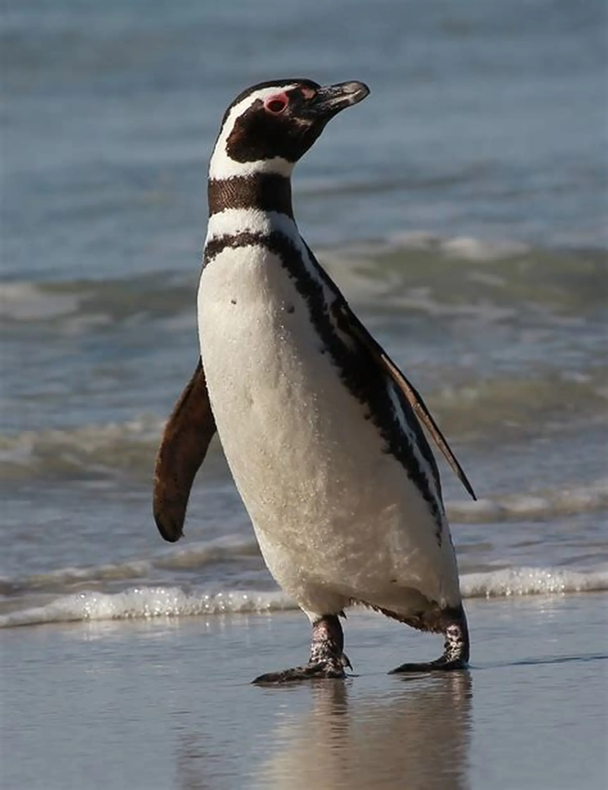
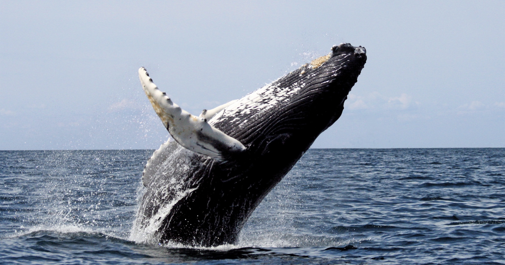
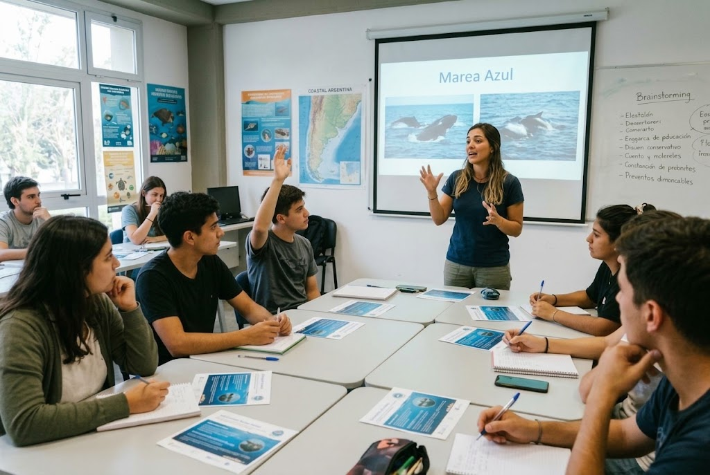
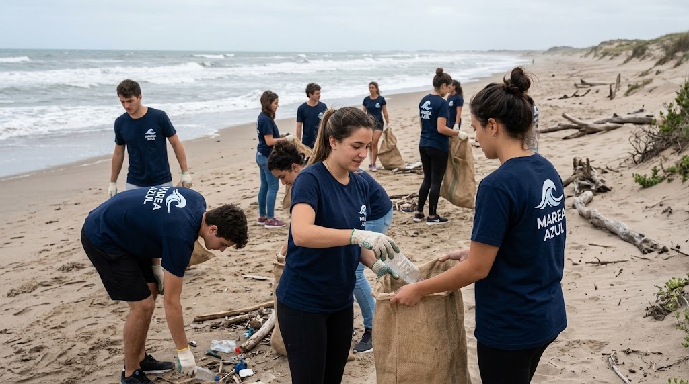

MAREA AZUL
Protegiendo los océanos y
las
especies marinas para asegurar un
futuro sostenible.
NUESTRA ORGANIZACIÓN
__________________________________________
Conocenos más
En Marea Azul trabajamos día a día para proteger
los ecosistemas marinos y preservar a las especies en peligro.
Nuestra Misión
Buscamos lograr una sociedad comprometida donde el cuidado
del océano sea una responsabilidad compartida.
Educación Ambiental
Promovemos la concientización con información clara y recursos
educativos para la comunidad.
Acción Ciudadana
Fomentamos el compromiso social y hábitos responsables para
proteger la biodiversidad marina.

NUESTROS PILARES
__________________________________
Qué hacemos
Comprometidos con la protección de nuestros océanos a través de acciones concretas.

Monitoreo y Cuidado de la Fauna
Trabajamos en la protección de la fauna marina mediante
iniciativas de conservación, seguimiento
de especies y
preservación de sus hábitats naturales.

Talleres y Recursos Educativos
Creamos propuestas educativas para jóvenes y docentes, promoviendo el aprendizaje sobre la conservación marina y el desarrollo de hábitos responsables con el medioambiente.

Programa «Mares sin Plástico»
Impulsamos iniciativas para reducir la contaminación de las playas y zonas costeras, promoviendo la concientización sobre el uso del plástico y la participación comunitaria en el cuidado del ambiente.